Every picture on this page came out of a tool that measured something. There is no artist's impression here and no render of a part that does not exist as a solid. Each caption says what the image shows, the command that produced it, and the verdict beside it — read out of the other lanes' own verdict files at the moment this page was generated, so the page cannot claim a PASS they do not.
These four came out of KiCad today, from the .kicad_pcb files on disk at the moment this page was generated. The fifth is the render this gallery showed until now, kept because the difference between them IS the point: it has four antenna teeth and no routing, and the board has nine and 610 track segments. Every caption names the .kicad_pcb it came from and that file's own timestamp.
This is the lane where this project could most easily lie to itself, so it is the one shown at greatest length. halo does NOT currently beat Apple's −3.2 dBi on the element that ships. The best measured figure on the shipping board is −3.391 dBi at a resonance 15.4 % below the band; the latest solve, a retune finished at 17:55 today, reads −11.806 dBi at 2.3730 GHz and is WORSE. The one number that beats Apple, +0.521 dBi, is a rim IFA on a Ø30 × 1.0 mm study puck — a different antenna on a different board, quoted to Leif once and withdrawn (CONCERNS.md C-5).
CURRENT drawn 2026-09-05 18:11, from ce-designs/halo/tools/gen_antenna_trajectory.py last written 2026-09-05 18:11 — the picture is the newer of the two
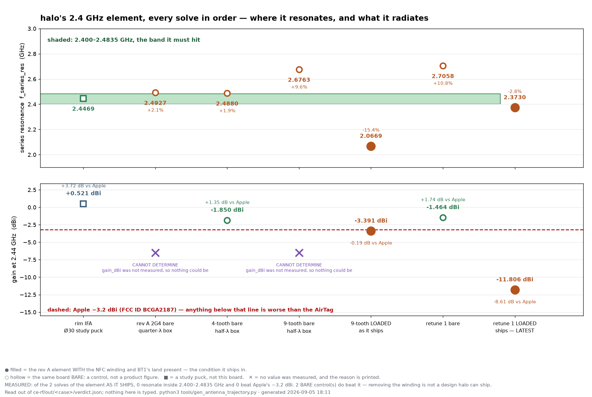
every 2.4 GHz solve in order: where the element resonates against the band it must hit, and what it radiates against Apple's filed figure. Filled markers are the element WITH the NFC winding present — the condition it ships in; hollow ones are bare controls FAIL
of the 2 solves of the element AS IT SHIPS — the NFC winding and BT1's negative-contact land present as passive copper — 0 resonate inside 2.400–2.4835 GHz and 0 beat Apple's −3.2 dBi. 2 BARE control(s) do beat it, and deleting the winding is not a board halo can ship.
python3 tools/gen_antenna_trajectory.py
ce-designs/halo/out/gallery/fig-antenna-trajectory.png · 1898x1274 px, stddev 32.0
CURRENT drawn 2026-09-05 17:31, from ce-rf/out/halo-rev-a-2g4-rt1-passive/model.json last written 2026-09-05 17:31 — the picture is the newer of the two
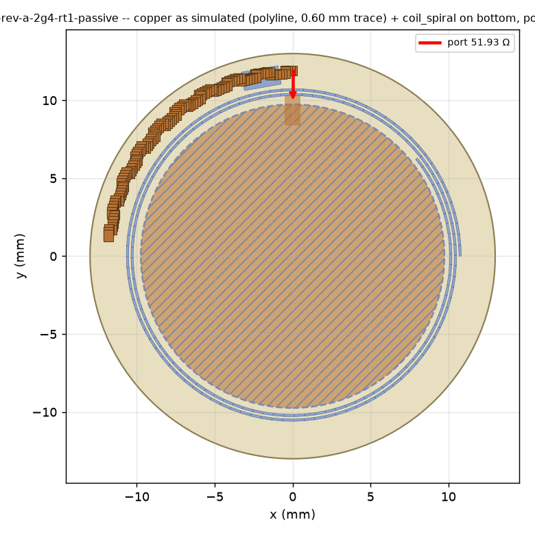
LATEST — retune 1, the shipping element loaded, 2026-09-05 17:55 — the copper as the solver sees it — element, ground pour, passive copper and the 50 Ω port FAIL
eps_eff_implied 1.397 · case verdict FAIL: 8 asserts, worst is FAIL
bin/rf antenna specs/halo-rev-a-2g4-rt1-passive.json (openEMS; ce-rf/out/halo-rev-a-2g4-rt1-passive/)
ce-rf/out/halo-rev-a-2g4-rt1-passive/layout.png · 780x780 px, stddev 47.9
CURRENT drawn 2026-09-05 17:55, from ce-rf/out/halo-rev-a-2g4-rt1-passive/model.json last written 2026-09-05 17:31 — the picture is the newer of the two
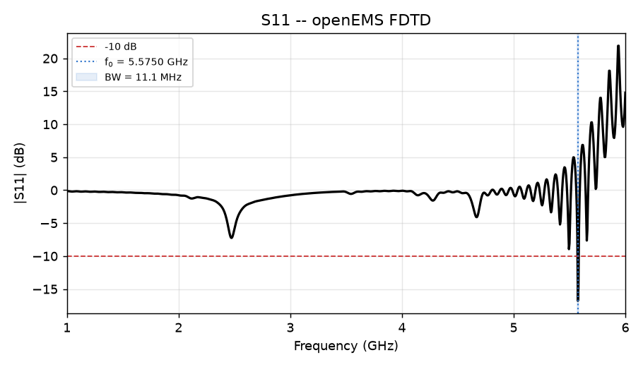
LATEST — retune 1, the shipping element loaded, 2026-09-05 17:55 — return loss across the swept span FAIL
worst S11 in the BLE band with the best BUILDABLE matching network: -4.91 dB · case verdict FAIL: 8 asserts, worst is FAIL
bin/rf antenna specs/halo-rev-a-2g4-rt1-passive.json (openEMS; ce-rf/out/halo-rev-a-2g4-rt1-passive/)
ce-rf/out/halo-rev-a-2g4-rt1-passive/s11.png · 910x520 px, stddev 43.7
CURRENT drawn 2026-09-05 17:55, from ce-rf/out/halo-rev-a-2g4-rt1-passive/model.json last written 2026-09-05 17:31 — the picture is the newer of the two
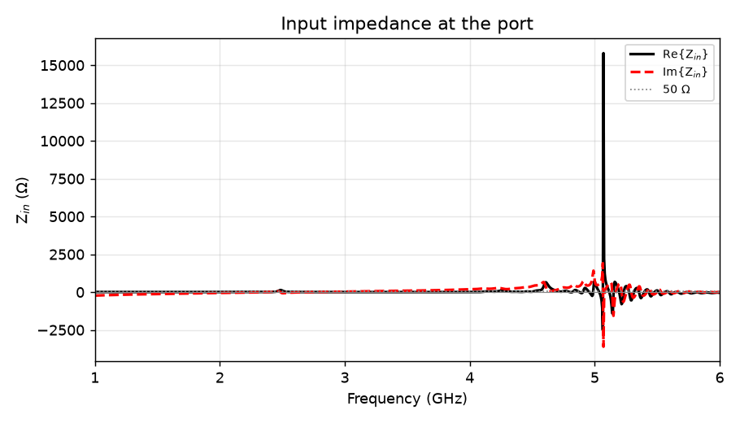
LATEST — retune 1, the shipping element loaded, 2026-09-05 17:55 — input impedance — every upward reactance zero-crossing is a series resonance, and this is where they are read FAIL
f_series_res 2.3730 GHz (band 2.400–2.4835 GHz) · case verdict FAIL: 8 asserts, worst is FAIL
bin/rf antenna specs/halo-rev-a-2g4-rt1-passive.json (openEMS; ce-rf/out/halo-rev-a-2g4-rt1-passive/)
ce-rf/out/halo-rev-a-2g4-rt1-passive/zin.png · 910x520 px, stddev 36.7
CURRENT drawn 2026-09-05 17:55, from ce-rf/out/halo-rev-a-2g4-rt1-passive/model.json last written 2026-09-05 17:31 — the picture is the newer of the two
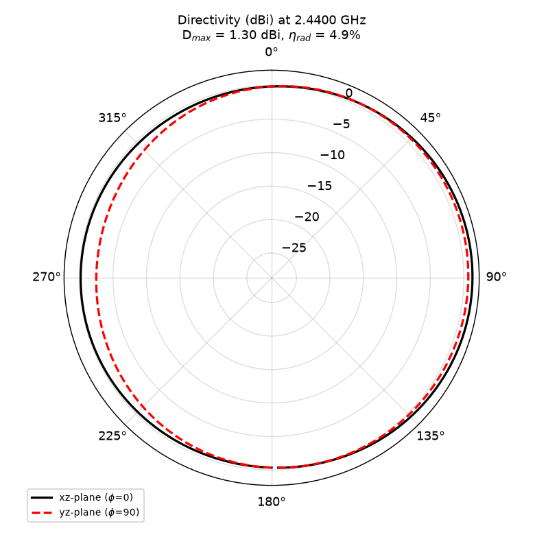
LATEST — retune 1, the shipping element loaded, 2026-09-05 17:55 — the radiation pattern FAIL
gain -11.806 dBi (Apple's filed figure: −3.2 dBi) · case verdict FAIL: 8 asserts, worst is FAIL
bin/rf antenna specs/halo-rev-a-2g4-rt1-passive.json (openEMS; ce-rf/out/halo-rev-a-2g4-rt1-passive/)
ce-rf/out/halo-rev-a-2g4-rt1-passive/pattern.png · 780x780 px, stddev 35.0
CURRENT drawn 2026-09-05 15:27, from ce-rf/out/halo-rev-a-2g4-meander9-passive/model.json last written 2026-09-05 15:27 — the picture is the newer of the two
the best measured state of the shipping element — DECISIONS.md D26i — the copper as the solver sees it — element, ground pour, passive copper and the 50 Ω port FAIL
eps_eff_implied 1.319 · case verdict FAIL: 8 asserts, worst is FAIL
bin/rf antenna specs/halo-rev-a-2g4-meander9-passive.json (openEMS; ce-rf/out/halo-rev-a-2g4-meander9-passive/)
ce-rf/out/halo-rev-a-2g4-meander9-passive/layout.png · 780x780 px, stddev 48.2
CURRENT drawn 2026-09-05 15:33, from ce-rf/out/halo-rev-a-2g4-meander9-passive/model.json last written 2026-09-05 15:27 — the picture is the newer of the two
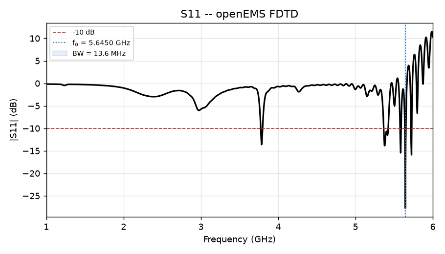
the best measured state of the shipping element — DECISIONS.md D26i — return loss across the swept span FAIL
worst S11 in the BLE band with the best BUILDABLE matching network: -4.95 dB · case verdict FAIL: 8 asserts, worst is FAIL
bin/rf antenna specs/halo-rev-a-2g4-meander9-passive.json (openEMS; ce-rf/out/halo-rev-a-2g4-meander9-passive/)
ce-rf/out/halo-rev-a-2g4-meander9-passive/s11.png · 910x520 px, stddev 43.9
CURRENT drawn 2026-09-05 15:33, from ce-rf/out/halo-rev-a-2g4-meander9-passive/model.json last written 2026-09-05 15:27 — the picture is the newer of the two
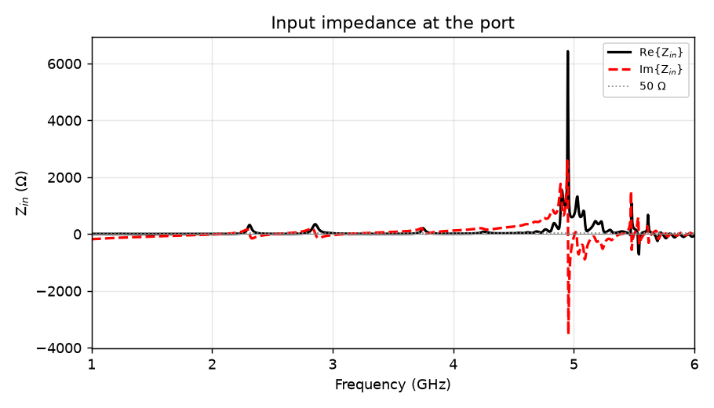
the best measured state of the shipping element — DECISIONS.md D26i — input impedance — every upward reactance zero-crossing is a series resonance, and this is where they are read FAIL
f_series_res 2.0669 GHz (band 2.400–2.4835 GHz) · case verdict FAIL: 8 asserts, worst is FAIL
bin/rf antenna specs/halo-rev-a-2g4-meander9-passive.json (openEMS; ce-rf/out/halo-rev-a-2g4-meander9-passive/)
ce-rf/out/halo-rev-a-2g4-meander9-passive/zin.png · 910x520 px, stddev 36.9
CURRENT drawn 2026-09-05 15:33, from ce-rf/out/halo-rev-a-2g4-meander9-passive/model.json last written 2026-09-05 15:27 — the picture is the newer of the two
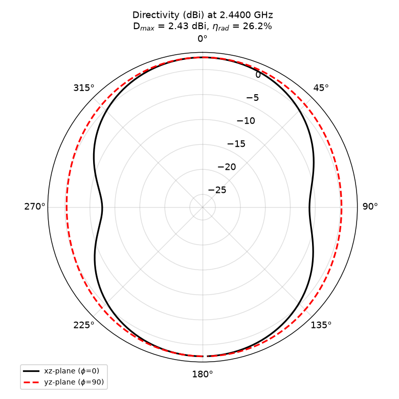
the best measured state of the shipping element — DECISIONS.md D26i — the radiation pattern FAIL
gain -3.391 dBi (Apple's filed figure: −3.2 dBi) · case verdict FAIL: 8 asserts, worst is FAIL
bin/rf antenna specs/halo-rev-a-2g4-meander9-passive.json (openEMS; ce-rf/out/halo-rev-a-2g4-meander9-passive/)
ce-rf/out/halo-rev-a-2g4-meander9-passive/pattern.png · 780x780 px, stddev 35.0
CURRENT drawn 2026-09-05 17:28, from ce-rf/out/halo-rev-a-2g4-rt1-bare/model.json last written 2026-09-05 17:28 — the picture is the newer of the two
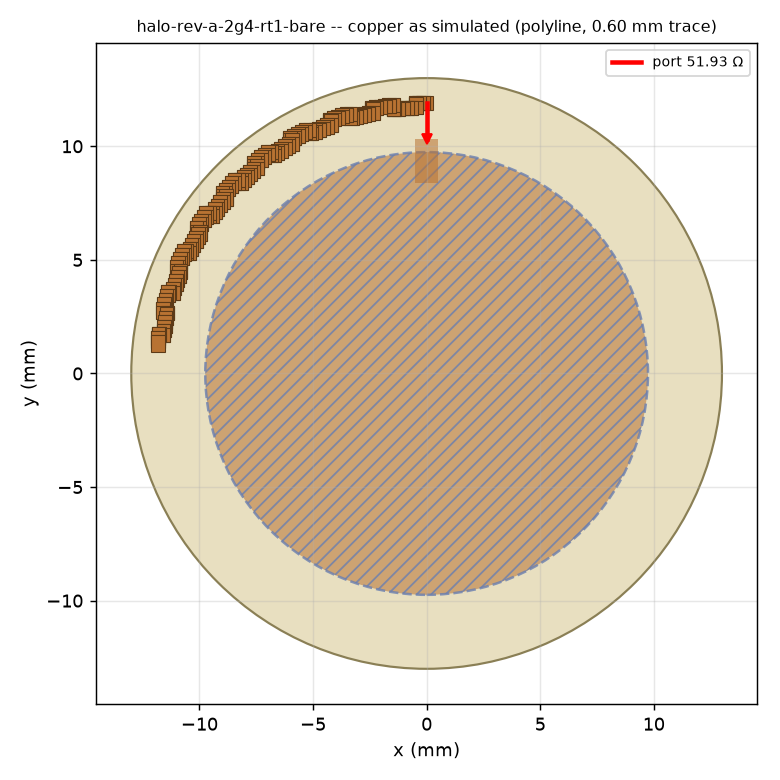
the bare control for the retune — a board with the NFC winding deleted, which halo cannot ship — the copper as the solver sees it — element, ground pour, passive copper and the 50 Ω port FAIL
eps_eff_implied 1.074 · case verdict FAIL: 8 asserts, worst is FAIL
bin/rf antenna specs/halo-rev-a-2g4-rt1-bare.json (openEMS; ce-rf/out/halo-rev-a-2g4-rt1-bare/)
ce-rf/out/halo-rev-a-2g4-rt1-bare/layout.png · 780x780 px, stddev 46.4
CURRENT drawn 2026-09-05 17:30, from ce-rf/out/halo-rev-a-2g4-rt1-bare/model.json last written 2026-09-05 17:28 — the picture is the newer of the two
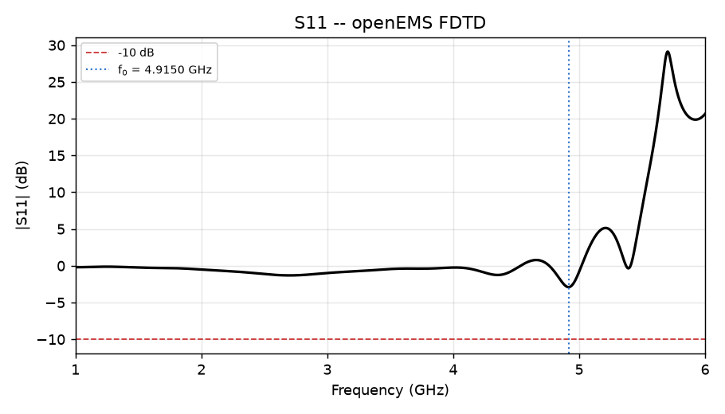
the bare control for the retune — a board with the NFC winding deleted, which halo cannot ship — return loss across the swept span FAIL
worst S11 in the BLE band with the best BUILDABLE matching network: -7.52 dB · case verdict FAIL: 8 asserts, worst is FAIL
bin/rf antenna specs/halo-rev-a-2g4-rt1-bare.json (openEMS; ce-rf/out/halo-rev-a-2g4-rt1-bare/)
ce-rf/out/halo-rev-a-2g4-rt1-bare/s11.png · 910x520 px, stddev 35.6
CURRENT drawn 2026-09-05 17:30, from ce-rf/out/halo-rev-a-2g4-rt1-bare/model.json last written 2026-09-05 17:28 — the picture is the newer of the two
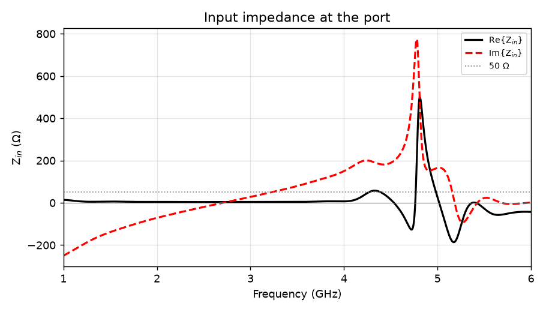
the bare control for the retune — a board with the NFC winding deleted, which halo cannot ship — input impedance — every upward reactance zero-crossing is a series resonance, and this is where they are read FAIL
f_series_res 2.7058 GHz (band 2.400–2.4835 GHz) · case verdict FAIL: 8 asserts, worst is FAIL
bin/rf antenna specs/halo-rev-a-2g4-rt1-bare.json (openEMS; ce-rf/out/halo-rev-a-2g4-rt1-bare/)
ce-rf/out/halo-rev-a-2g4-rt1-bare/zin.png · 910x520 px, stddev 38.1
CURRENT drawn 2026-09-05 17:30, from ce-rf/out/halo-rev-a-2g4-rt1-bare/model.json last written 2026-09-05 17:28 — the picture is the newer of the two
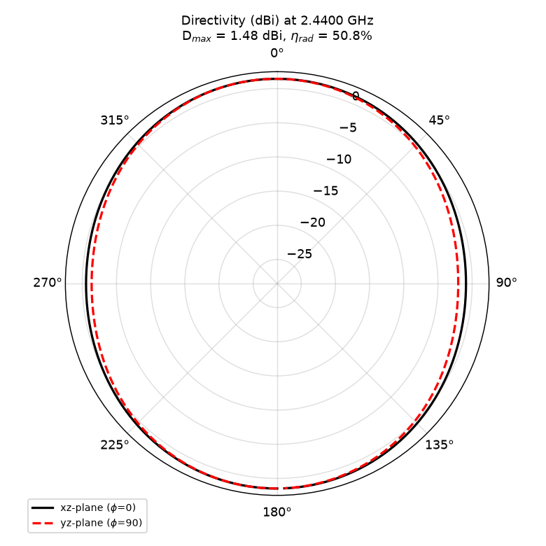
the bare control for the retune — a board with the NFC winding deleted, which halo cannot ship — the radiation pattern FAIL
gain -1.464 dBi (Apple's filed figure: −3.2 dBi) · case verdict FAIL: 8 asserts, worst is FAIL
bin/rf antenna specs/halo-rev-a-2g4-rt1-bare.json (openEMS; ce-rf/out/halo-rev-a-2g4-rt1-bare/)
ce-rf/out/halo-rev-a-2g4-rt1-bare/pattern.png · 780x780 px, stddev 34.7
CURRENT drawn 2026-09-05 15:25, from ce-rf/out/halo-rev-a-2g4-meander9-bare/model.json last written 2026-09-05 15:25 — the picture is the newer of the two
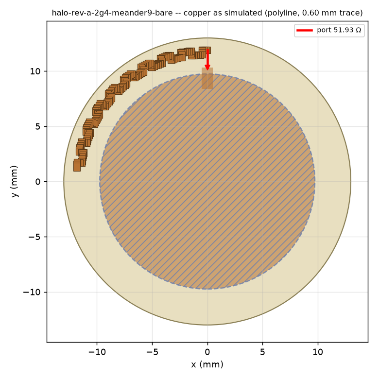
the bare nine-tooth control — the case that measured NO far field at all, and whose leftover pattern.png this page refuses below — the copper as the solver sees it — element, ground pour, passive copper and the 50 Ω port FAIL
eps_eff_implied 0.787 · case verdict FAIL: 8 asserts, worst is FAIL
bin/rf antenna specs/halo-rev-a-2g4-meander9-bare.json (openEMS; ce-rf/out/halo-rev-a-2g4-meander9-bare/)
ce-rf/out/halo-rev-a-2g4-meander9-bare/layout.png · 780x780 px, stddev 46.9
CURRENT drawn 2026-09-05 15:27, from ce-rf/out/halo-rev-a-2g4-meander9-bare/model.json last written 2026-09-05 15:25 — the picture is the newer of the two
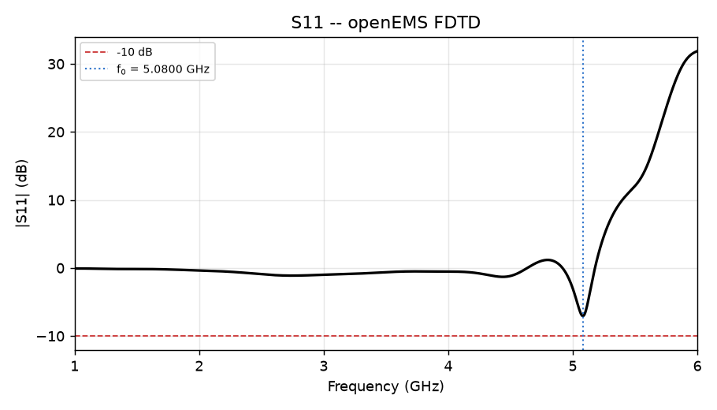
the bare nine-tooth control — the case that measured NO far field at all, and whose leftover pattern.png this page refuses below — return loss across the swept span FAIL
worst S11 in the BLE band with the best BUILDABLE matching network: -6.62 dB · case verdict FAIL: 8 asserts, worst is FAIL
bin/rf antenna specs/halo-rev-a-2g4-meander9-bare.json (openEMS; ce-rf/out/halo-rev-a-2g4-meander9-bare/)
ce-rf/out/halo-rev-a-2g4-meander9-bare/s11.png · 910x520 px, stddev 34.5
CURRENT drawn 2026-09-05 15:27, from ce-rf/out/halo-rev-a-2g4-meander9-bare/model.json last written 2026-09-05 15:25 — the picture is the newer of the two
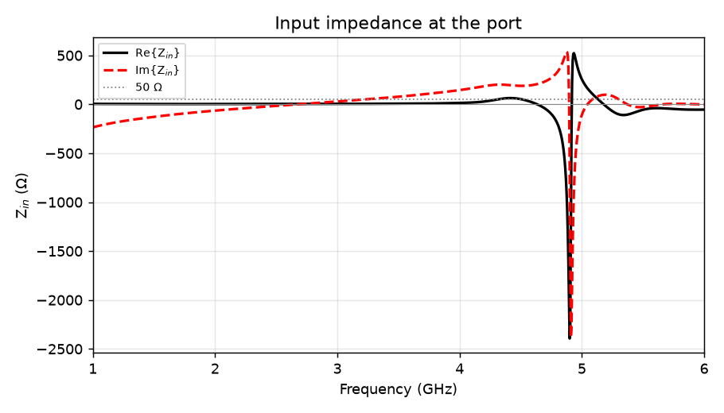
the bare nine-tooth control — the case that measured NO far field at all, and whose leftover pattern.png this page refuses below — input impedance — every upward reactance zero-crossing is a series resonance, and this is where they are read FAIL
f_series_res 2.6763 GHz (band 2.400–2.4835 GHz) · case verdict FAIL: 8 asserts, worst is FAIL
bin/rf antenna specs/halo-rev-a-2g4-meander9-bare.json (openEMS; ce-rf/out/halo-rev-a-2g4-meander9-bare/)
ce-rf/out/halo-rev-a-2g4-meander9-bare/zin.png · 910x520 px, stddev 37.9
NOT PUBLISHED — STALE
STALE and refused — a simulation plot older than its own run is a picture of a solve that was superseded. drawn 2026-09-05 09:34; ce-rf/out/halo-rev-a-2g4-meander9-bare/model.json was written 2026-09-05 15:25, which is 5.9 h LATER. This picture is of an earlier state of that file.
ce-rf/out/halo-rev-a-2g4-meander9-bare/pattern.png
This card would have shown: the bare nine-tooth control — the case that measured NO far field at all, and whose leftover pattern.png this page refuses below — the radiation pattern
CURRENT drawn 2026-09-05 06:34, from ce-rf/out/halo-round-rim-ifa/model.json last written 2026-09-05 06:34 — the picture is the newer of the two
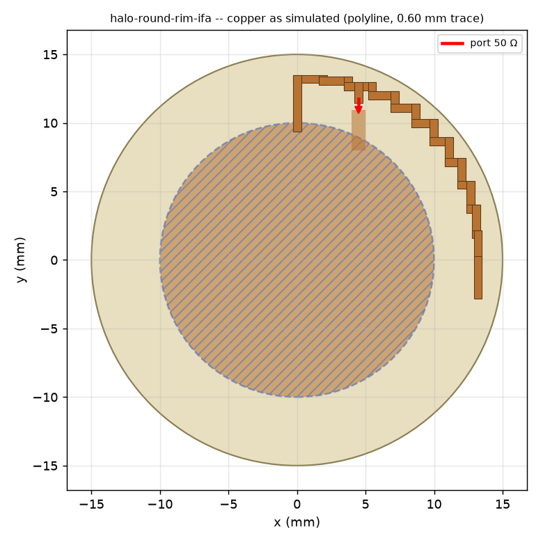
WITHDRAWN AS HALO'S NUMBER — the Ø30 × 1.0 mm study puck, the only geometry here that beats Apple — the copper as the solver sees it — element, ground pour, passive copper and the 50 Ω port PASS
eps_eff_implied 0.891 · case verdict PASS: 7 asserts, worst is PASS
bin/rf antenna specs/halo-round-rim-ifa.json (openEMS; ce-rf/out/halo-round-rim-ifa/)
ce-rf/out/halo-round-rim-ifa/layout.png · 780x780 px, stddev 44.0
CURRENT drawn 2026-09-05 06:34, from ce-rf/out/halo-round-rim-ifa/model.json last written 2026-09-05 06:34 — the picture is the newer of the two
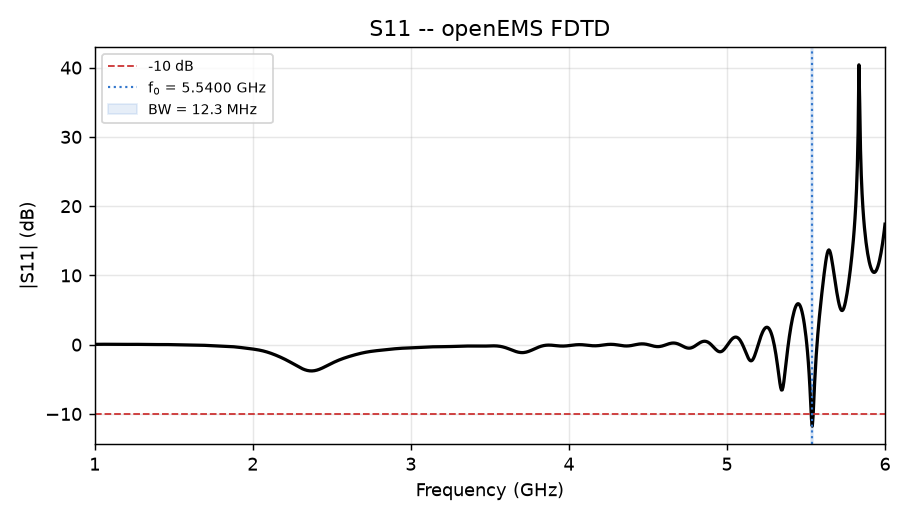
WITHDRAWN AS HALO'S NUMBER — the Ø30 × 1.0 mm study puck, the only geometry here that beats Apple — return loss across the swept span PASS
worst S11 in the BLE band with the best BUILDABLE matching network: -8.08 dB · case verdict PASS: 7 asserts, worst is PASS
bin/rf antenna specs/halo-round-rim-ifa.json (openEMS; ce-rf/out/halo-round-rim-ifa/)
ce-rf/out/halo-round-rim-ifa/s11.png · 910x520 px, stddev 38.3
CURRENT drawn 2026-09-05 06:34, from ce-rf/out/halo-round-rim-ifa/model.json last written 2026-09-05 06:34 — the picture is the newer of the two
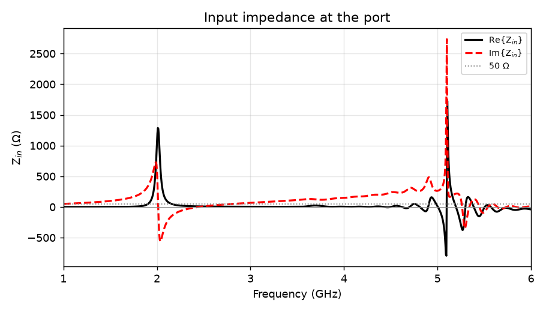
WITHDRAWN AS HALO'S NUMBER — the Ø30 × 1.0 mm study puck, the only geometry here that beats Apple — input impedance — every upward reactance zero-crossing is a series resonance, and this is where they are read PASS
f_series_res 2.4469 GHz (band 2.400–2.4835 GHz) · case verdict PASS: 7 asserts, worst is PASS
bin/rf antenna specs/halo-round-rim-ifa.json (openEMS; ce-rf/out/halo-round-rim-ifa/)
ce-rf/out/halo-round-rim-ifa/zin.png · 910x520 px, stddev 39.0
CURRENT drawn 2026-09-05 06:34, from ce-rf/out/halo-round-rim-ifa/model.json last written 2026-09-05 06:34 — the picture is the newer of the two
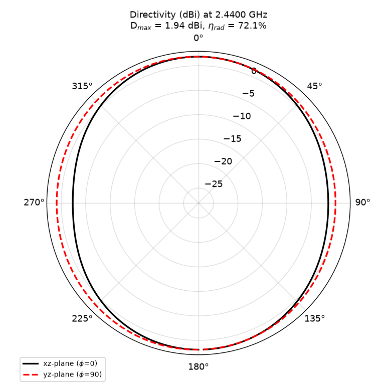
WITHDRAWN AS HALO'S NUMBER — the Ø30 × 1.0 mm study puck, the only geometry here that beats Apple — the radiation pattern PASS
gain +0.521 dBi (Apple's filed figure: −3.2 dBi) · case verdict PASS: 7 asserts, worst is PASS
bin/rf antenna specs/halo-round-rim-ifa.json (openEMS; ce-rf/out/halo-round-rim-ifa/)
ce-rf/out/halo-round-rim-ifa/pattern.png · 780x780 px, stddev 35.0
Every antenna solve in this repository before 2026-09-05 15:2x was void, and finding out why took three refuted hypotheses before the fourth held. The residual energy FLOORED instead of decaying — meander9-bare sat at −34.87 dB from timestep 41,745 to 459,690, flat to 0.01 dB over 418,000 timesteps, against a −40 dB end criterion, so more timesteps could never reach it. Refuted in order: (1) the mesh — the min_cell_mm fix was real and it floored again; (2) the passive copper — the bare control floored too; (3) the meander density — a four-tooth element differing by 0.0078 mm of trace floored as readily as nine. The fourth held: the absorbing boundary. sim.airbox_pad_mm went from a quarter wavelength to a half, and the same model converged in 8,415 timesteps where it had capped at 460,000. The Courant timestep never moved, so the bigger box did not win by running longer.
What the thing is. Every picture below is the same set of solids design.py builds and measures — none is an artist's impression, and nothing here was drawn by hand. design.py has not changed since 2026-09-04 12:30, so these renders are current and say so.
Three mechanisms carry this product, and each was measured by kernel probes rather than argued: the bayonet door, the sprung contacts, and the piezo bonded to a flat land it would otherwise have to conform to.
Four circuits, every scenario, each plot with the assertions that were evaluated against it. These are ngspice runs, not sketches: the numbers beside each picture are what the solver returned, and the rule each was graded against. Unlike the antenna, this lane is quiet — all four examples pass every assert, and have since 2026-09-04.
Apple's own hardware, photographed by other people, and the comparison figures built against it. These photographs have no source in this repository and cannot go stale — nothing here generates them.
The whole freshness table in one place, so nobody has to scroll to find out whether they are looking at today's work.
| image | state | against what, and when |
|---|
| ce-designs/halo/out/mech/halo-puck-section-front.png | STALE | drawn 2026-09-04 12:11; ce-designs/halo/design.py was written 2026-09-04 12:30, which is 19 min LATER. This picture is of an earlier state of that file. |
| ce-designs/halo/out/render/halo_rev_a-bottom.png | STALE | drawn 2026-09-04 22:03; ce-designs/halo/electronics/halo_rev_a/out/halo_rev_a-routed.kicad_pcb was written 2026-09-05 08:15, which is 10.2 h LATER. This picture is of an earlier state of that file. |
| ce-designs/halo/out/render/halo_rev_a-top.png | STALE | drawn 2026-09-04 22:02; ce-designs/halo/electronics/halo_rev_a/out/halo_rev_a-routed.kicad_pcb was written 2026-09-05 08:15, which is 10.2 h LATER. This picture is of an earlier state of that file. |
| ce-designs/halo/images/airtag/fcc-BCGA2187-internal-photo-1.jpg | UNGOVERNED | |
| ce-designs/halo/images/airtag/fcc-BCGA2187-internal-photo-4.jpg | UNGOVERNED | |
| ce-designs/halo/images/airtag/fcc-BCGA2187-internal-photo-6.jpg | UNGOVERNED | |
| ce-designs/halo/images/airtag/oflynn-backside-1000px.jpeg | UNGOVERNED | |
| ce-designs/halo/images/airtag/oflynn-frontside-tpnames.jpg | UNGOVERNED | |
| ce-designs/halo/out/gallery/fig-antenna-trajectory.png | CURRENT | drawn 2026-09-05 18:11, from ce-designs/halo/tools/gen_antenna_trajectory.py last written 2026-09-05 18:11 — the picture is the newer of the two |
| ce-designs/halo/out/gallery/fig-board-side-by-side.png | CURRENT | drawn 2026-09-05 18:28, from ce-designs/halo/electronics/halo_rev_a/out/halo_rev_a-routed.kicad_pcb last written 2026-09-05 08:15 — the picture is the newer of the two |
| ce-designs/halo/out/gallery/fig-halo-vs-airtag.png | CURRENT | drawn 2026-09-05 18:28, from ce-designs/halo/tools/gen_gallery_figs.py last written 2026-09-05 18:28 — the picture is the newer of the two |
| ce-designs/halo/out/gallery/fig-stack.png | CURRENT | drawn 2026-09-05 18:28, from ce-designs/halo/tools/gen_gallery_figs.py last written 2026-09-05 18:28 — the picture is the newer of the two |
| ce-designs/halo/out/mech/halo-battery-contact-pos-a.png | CURRENT | drawn 2026-09-04 17:04, from ce-designs/halo/design.py last written 2026-09-04 12:30 — the picture is the newer of the two |
| ce-designs/halo/out/mech/halo-battery-door.png | CURRENT | drawn 2026-09-04 17:04, from ce-designs/halo/design.py last written 2026-09-04 12:30 — the picture is the newer of the two |
| ce-designs/halo/out/mech/halo-carrier.png | CURRENT | drawn 2026-09-04 17:04, from ce-designs/halo/design.py last written 2026-09-04 12:30 — the picture is the newer of the two |
| ce-designs/halo/out/mech/halo-pcb-blank.png | CURRENT | drawn 2026-09-04 17:04, from ce-designs/halo/design.py last written 2026-09-04 12:30 — the picture is the newer of the two |
| ce-designs/halo/out/mech/halo-puck-iso.png | CURRENT | drawn 2026-09-04 17:04, from ce-designs/halo/design.py last written 2026-09-04 12:30 — the picture is the newer of the two |
| ce-designs/halo/out/mech/halo-puck-section.png | CURRENT | drawn 2026-09-04 17:04, from ce-designs/halo/design.py last written 2026-09-04 12:30 — the picture is the newer of the two |
| ce-designs/halo/out/mech/halo-shell-top.png | CURRENT | drawn 2026-09-04 17:04, from ce-designs/halo/design.py last written 2026-09-04 12:30 — the picture is the newer of the two |
| ce-designs/halo/out/render/halo-bayonet-section.png | CURRENT | drawn 2026-09-05 06:06, from ce-designs/halo/design.py last written 2026-09-04 12:30 — the picture is the newer of the two |
| ce-designs/halo/out/render/halo-bayonet.png | CURRENT | drawn 2026-09-05 06:06, from ce-designs/halo/design.py last written 2026-09-04 12:30 — the picture is the newer of the two |
| ce-designs/halo/out/render/halo-board-in-shell.png | CURRENT | drawn 2026-09-05 06:06, from ce-designs/halo/design.py last written 2026-09-04 12:30 — the picture is the newer of the two |
| ce-designs/halo/out/render/halo-contacts.png | CURRENT | drawn 2026-09-05 06:06, from ce-designs/halo/design.py last written 2026-09-04 12:30 — the picture is the newer of the two |
| ce-designs/halo/out/render/halo-piezo-land.png | CURRENT | drawn 2026-09-05 06:06, from ce-designs/halo/design.py last written 2026-09-04 12:30 — the picture is the newer of the two |
| ce-designs/halo/out/render/halo-puck-exploded-wide.png | CURRENT | drawn 2026-09-05 06:06, from ce-designs/halo/design.py last written 2026-09-04 12:30 — the picture is the newer of the two |
| ce-designs/halo/out/render/halo-puck-hero.png | CURRENT | drawn 2026-09-05 06:06, from ce-designs/halo/design.py last written 2026-09-04 12:30 — the picture is the newer of the two |
| ce-designs/halo/out/render/halo_rev_a-routed-bottom.png | CURRENT | drawn 2026-09-05 18:02, from ce-designs/halo/electronics/halo_rev_a/out/halo_rev_a-routed.kicad_pcb last written 2026-09-05 08:15 — the picture is the newer of the two |
| ce-designs/halo/out/render/halo_rev_a-routed-iso.png | CURRENT | drawn 2026-09-05 18:03, from ce-designs/halo/electronics/halo_rev_a/out/halo_rev_a-routed.kicad_pcb last written 2026-09-05 08:15 — the picture is the newer of the two |
| ce-designs/halo/out/render/halo_rev_a-routed-top.png | CURRENT | drawn 2026-09-05 18:02, from ce-designs/halo/electronics/halo_rev_a/out/halo_rev_a-routed.kicad_pcb last written 2026-09-05 08:15 — the picture is the newer of the two |
| ce-designs/halo/out/render/halo_rev_a-unrouted-top.png | CURRENT | drawn 2026-09-05 18:03, from ce-designs/halo/electronics/halo_rev_a/out/halo_rev_a.kicad_pcb last written 2026-09-05 07:54 — the picture is the newer of the two |
| ce-rf/out/halo-rev-a-2g4-meander4-bare-pad-full/s11.png | CURRENT | drawn 2026-09-05 15:09, from ce-rf/out/halo-rev-a-2g4-meander4-bare-pad-full/model.json last written 2026-09-05 15:09 — the picture is the newer of the two |
| ce-rf/out/halo-rev-a-2g4-meander4-bare-pad-half/s11.png | CURRENT | drawn 2026-09-05 15:09, from ce-rf/out/halo-rev-a-2g4-meander4-bare-pad-half/model.json last written 2026-09-05 15:09 — the picture is the newer of the two |
| ce-rf/out/halo-rev-a-2g4-meander4-bare-pad-quarter/s11.png | CURRENT | drawn 2026-09-05 15:09, from ce-rf/out/halo-rev-a-2g4-meander4-bare-pad-quarter/model.json last written 2026-09-05 15:08 — the picture is the newer of the two |
| ce-rf/out/halo-rev-a-2g4-meander9-bare/layout.png | CURRENT | drawn 2026-09-05 15:25, from ce-rf/out/halo-rev-a-2g4-meander9-bare/model.json last written 2026-09-05 15:25 — the picture is the newer of the two |
| ce-rf/out/halo-rev-a-2g4-meander9-bare/s11.png | CURRENT | drawn 2026-09-05 15:27, from ce-rf/out/halo-rev-a-2g4-meander9-bare/model.json last written 2026-09-05 15:25 — the picture is the newer of the two |
| ce-rf/out/halo-rev-a-2g4-meander9-bare/zin.png | CURRENT | drawn 2026-09-05 15:27, from ce-rf/out/halo-rev-a-2g4-meander9-bare/model.json last written 2026-09-05 15:25 — the picture is the newer of the two |
| ce-rf/out/halo-rev-a-2g4-meander9-passive/layout.png | CURRENT | drawn 2026-09-05 15:27, from ce-rf/out/halo-rev-a-2g4-meander9-passive/model.json last written 2026-09-05 15:27 — the picture is the newer of the two |
| ce-rf/out/halo-rev-a-2g4-meander9-passive/pattern.png | CURRENT | drawn 2026-09-05 15:33, from ce-rf/out/halo-rev-a-2g4-meander9-passive/model.json last written 2026-09-05 15:27 — the picture is the newer of the two |
| ce-rf/out/halo-rev-a-2g4-meander9-passive/s11.png | CURRENT | drawn 2026-09-05 15:33, from ce-rf/out/halo-rev-a-2g4-meander9-passive/model.json last written 2026-09-05 15:27 — the picture is the newer of the two |
| ce-rf/out/halo-rev-a-2g4-meander9-passive/zin.png | CURRENT | drawn 2026-09-05 15:33, from ce-rf/out/halo-rev-a-2g4-meander9-passive/model.json last written 2026-09-05 15:27 — the picture is the newer of the two |
| ce-rf/out/halo-rev-a-2g4-room-r4000/layout.png | CURRENT | drawn 2026-09-05 15:40, from ce-rf/out/halo-rev-a-2g4-room-r4000/model.json last written 2026-09-05 15:40 — the picture is the newer of the two |
| ce-rf/out/halo-rev-a-2g4-room-r9743/layout.png | CURRENT | drawn 2026-09-05 15:33, from ce-rf/out/halo-rev-a-2g4-room-r9743/model.json last written 2026-09-05 15:33 — the picture is the newer of the two |
| ce-rf/out/halo-rev-a-2g4-rt1-bare/layout.png | CURRENT | drawn 2026-09-05 17:28, from ce-rf/out/halo-rev-a-2g4-rt1-bare/model.json last written 2026-09-05 17:28 — the picture is the newer of the two |
| ce-rf/out/halo-rev-a-2g4-rt1-bare/pattern.png | CURRENT | drawn 2026-09-05 17:30, from ce-rf/out/halo-rev-a-2g4-rt1-bare/model.json last written 2026-09-05 17:28 — the picture is the newer of the two |
| ce-rf/out/halo-rev-a-2g4-rt1-bare/s11.png | CURRENT | drawn 2026-09-05 17:30, from ce-rf/out/halo-rev-a-2g4-rt1-bare/model.json last written 2026-09-05 17:28 — the picture is the newer of the two |
| ce-rf/out/halo-rev-a-2g4-rt1-bare/zin.png | CURRENT | drawn 2026-09-05 17:30, from ce-rf/out/halo-rev-a-2g4-rt1-bare/model.json last written 2026-09-05 17:28 — the picture is the newer of the two |
| ce-rf/out/halo-rev-a-2g4-rt1-passive/layout.png | CURRENT | drawn 2026-09-05 17:31, from ce-rf/out/halo-rev-a-2g4-rt1-passive/model.json last written 2026-09-05 17:31 — the picture is the newer of the two |
| ce-rf/out/halo-rev-a-2g4-rt1-passive/pattern.png | CURRENT | drawn 2026-09-05 17:55, from ce-rf/out/halo-rev-a-2g4-rt1-passive/model.json last written 2026-09-05 17:31 — the picture is the newer of the two |
| ce-rf/out/halo-rev-a-2g4-rt1-passive/s11.png | CURRENT | drawn 2026-09-05 17:55, from ce-rf/out/halo-rev-a-2g4-rt1-passive/model.json last written 2026-09-05 17:31 — the picture is the newer of the two |
| ce-rf/out/halo-rev-a-2g4-rt1-passive/zin.png | CURRENT | drawn 2026-09-05 17:55, from ce-rf/out/halo-rev-a-2g4-rt1-passive/model.json last written 2026-09-05 17:31 — the picture is the newer of the two |
| ce-rf/out/halo-round-rim-ifa/layout.png | CURRENT | drawn 2026-09-05 06:34, from ce-rf/out/halo-round-rim-ifa/model.json last written 2026-09-05 06:34 — the picture is the newer of the two |
| ce-rf/out/halo-round-rim-ifa/pattern.png | CURRENT | drawn 2026-09-05 06:34, from ce-rf/out/halo-round-rim-ifa/model.json last written 2026-09-05 06:34 — the picture is the newer of the two |
| ce-rf/out/halo-round-rim-ifa/s11.png | CURRENT | drawn 2026-09-05 06:34, from ce-rf/out/halo-round-rim-ifa/model.json last written 2026-09-05 06:34 — the picture is the newer of the two |
| ce-rf/out/halo-round-rim-ifa/zin.png | CURRENT | drawn 2026-09-05 06:34, from ce-rf/out/halo-round-rim-ifa/model.json last written 2026-09-05 06:34 — the picture is the newer of the two |
| ce-spice/out/cr2032_pulse_load/end-of-life.png | CURRENT | drawn 2026-09-05 18:08, from ce-spice/out/cr2032_pulse_load/end-of-life.cir last written 2026-09-05 18:08 — the picture is the newer of the two |
| ce-spice/out/cr2032_pulse_load/fresh.png | CURRENT | drawn 2026-09-05 18:08, from ce-spice/out/cr2032_pulse_load/fresh.cir last written 2026-09-05 18:08 — the picture is the newer of the two |
| ce-spice/out/cr2032_pulse_load/pulse-point.png | CURRENT | drawn 2026-09-05 18:08, from ce-spice/out/cr2032_pulse_load/pulse-point.cir last written 2026-09-05 18:08 — the picture is the newer of the two |
| ce-spice/out/cr2032_pulse_load/worst-case-no-reservoir.png | CURRENT | drawn 2026-09-05 18:08, from ce-spice/out/cr2032_pulse_load/worst-case-no-reservoir.cir last written 2026-09-05 18:08 — the picture is the newer of the two |
| ce-spice/out/cr2032_pulse_load/worst-case.png | CURRENT | drawn 2026-09-05 18:08, from ce-spice/out/cr2032_pulse_load/worst-case.cir last written 2026-09-05 18:08 — the picture is the newer of the two |
| ce-spice/out/decoupling_ldo/datasheet-check.png | CURRENT | drawn 2026-09-05 18:08, from ce-spice/out/decoupling_ldo/datasheet-check.cir last written 2026-09-05 18:08 — the picture is the newer of the two |
| ce-spice/out/decoupling_ldo/halo-rail-50ma.png | CURRENT | drawn 2026-09-05 18:08, from ce-spice/out/decoupling_ldo/halo-rail-50ma.cir last written 2026-09-05 18:08 — the picture is the newer of the two |
| ce-spice/out/decoupling_ldo/halo-rail.png | CURRENT | drawn 2026-09-05 18:08, from ce-spice/out/decoupling_ldo/halo-rail.cir last written 2026-09-05 18:08 — the picture is the newer of the two |
| ce-spice/out/decoupling_ldo/no-local-decoupling.png | CURRENT | drawn 2026-09-05 18:08, from ce-spice/out/decoupling_ldo/no-local-decoupling.cir last written 2026-09-05 18:08 — the picture is the newer of the two |
| ce-spice/out/decoupling_ldo/underdamped-ringing.png | CURRENT | drawn 2026-09-05 18:08, from ce-spice/out/decoupling_ldo/underdamped-ringing.cir last written 2026-09-05 18:08 — the picture is the newer of the two |
| ce-spice/out/nfc_tank/as-measured.png | CURRENT | drawn 2026-09-05 18:08, from ce-spice/out/nfc_tank/as-measured.cir last written 2026-09-05 18:08 — the picture is the newer of the two |
| ce-spice/out/nfc_tank/damped-to-35.png | CURRENT | drawn 2026-09-05 18:08, from ce-spice/out/nfc_tank/damped-to-35.cir last written 2026-09-05 18:08 — the picture is the newer of the two |
| ce-spice/out/nfc_tank/detuned-10pct.png | CURRENT | drawn 2026-09-05 18:08, from ce-spice/out/nfc_tank/detuned-10pct.cir last written 2026-09-05 18:08 — the picture is the newer of the two |
| ce-spice/out/speaker_hbridge/coil-32r-0m5h.png | CURRENT | drawn 2026-09-05 18:08, from ce-spice/out/speaker_hbridge/coil-32r-0m5h.cir last written 2026-09-05 18:08 — the picture is the newer of the two |
| ce-spice/out/speaker_hbridge/coil-32r-2m0h.png | CURRENT | drawn 2026-09-05 18:09, from ce-spice/out/speaker_hbridge/coil-32r-2m0h.cir last written 2026-09-05 18:08 — the picture is the newer of the two |
| ce-spice/out/speaker_hbridge/coil-8r-0m5h.png | CURRENT | drawn 2026-09-05 18:08, from ce-spice/out/speaker_hbridge/coil-8r-0m5h.cir last written 2026-09-05 18:08 — the picture is the newer of the two |
| ce-spice/out/speaker_hbridge/coil-8r-2m0h.png | CURRENT | drawn 2026-09-05 18:08, from ce-spice/out/speaker_hbridge/coil-8r-2m0h.cir last written 2026-09-05 18:08 — the picture is the newer of the two |
| ce-spice/out/speaker_hbridge/cr2032-loaded.png | CURRENT | drawn 2026-09-05 18:09, from ce-spice/out/speaker_hbridge/cr2032-loaded.cir last written 2026-09-05 18:09 — the picture is the newer of the two |
A gallery is only worth reading if it is willing to be empty in the places where there is nothing to show.